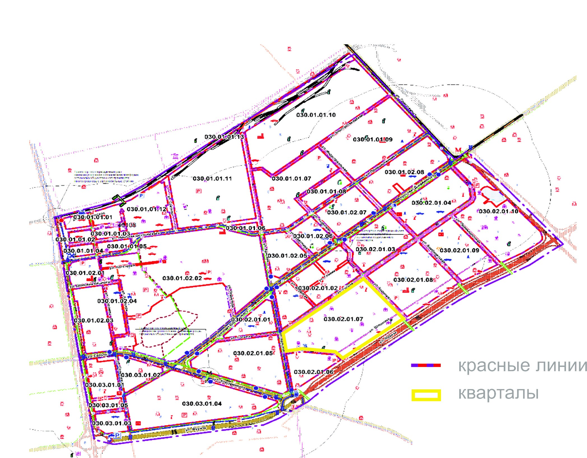
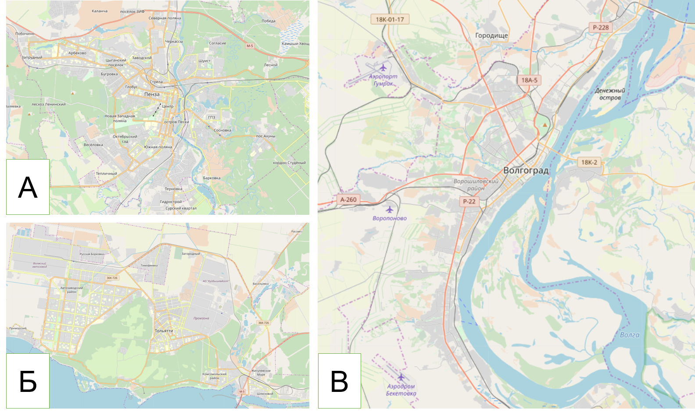
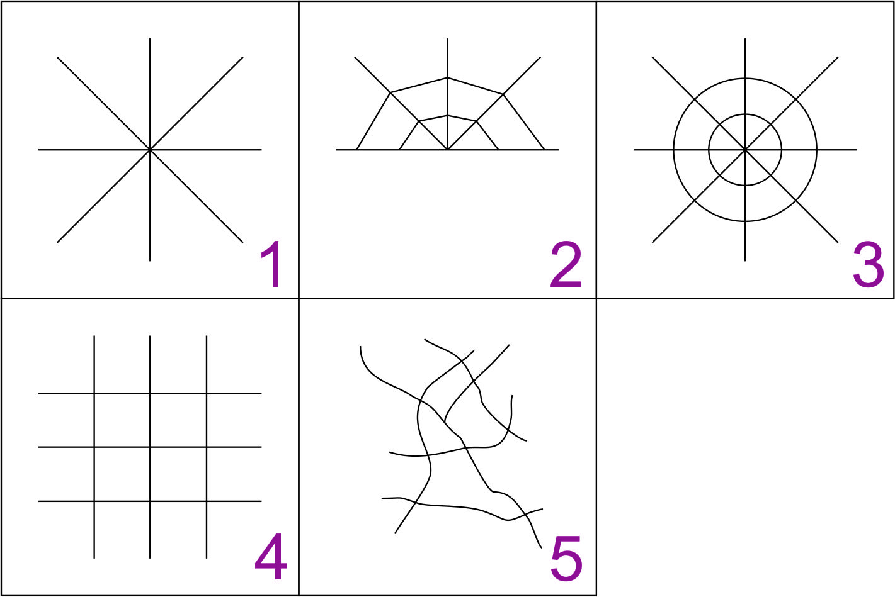
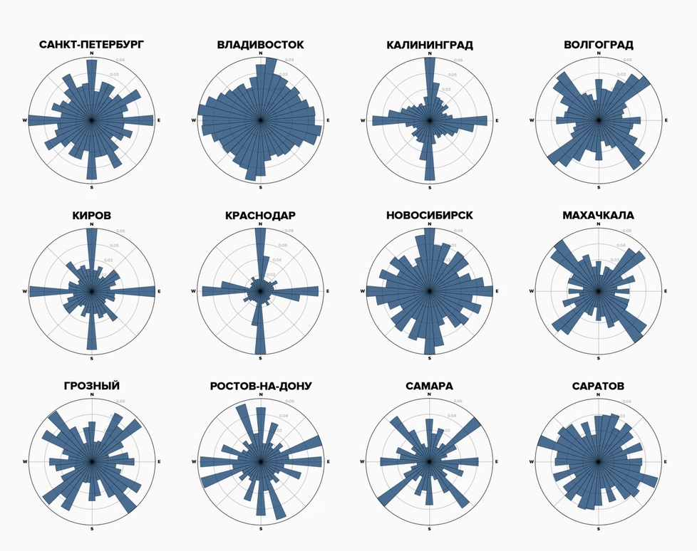
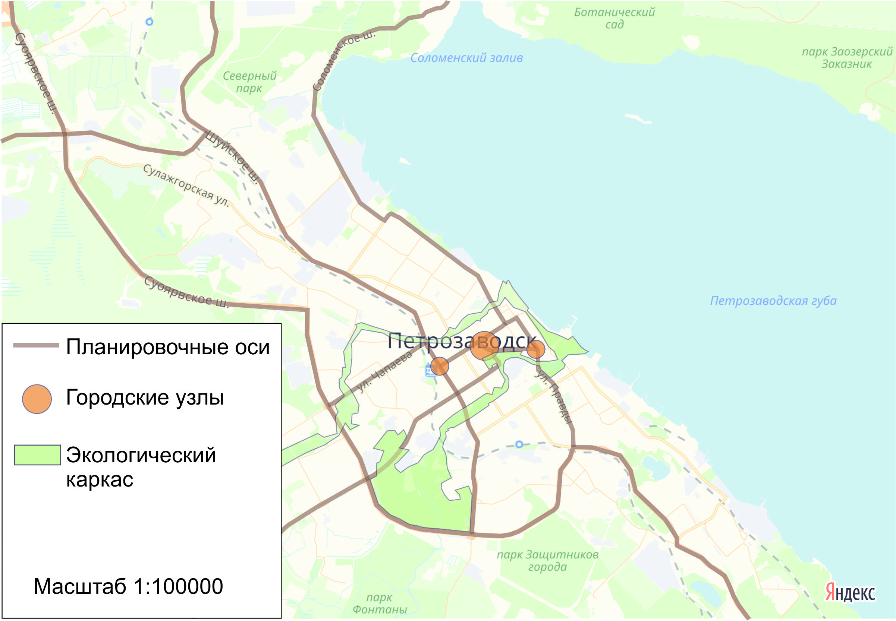
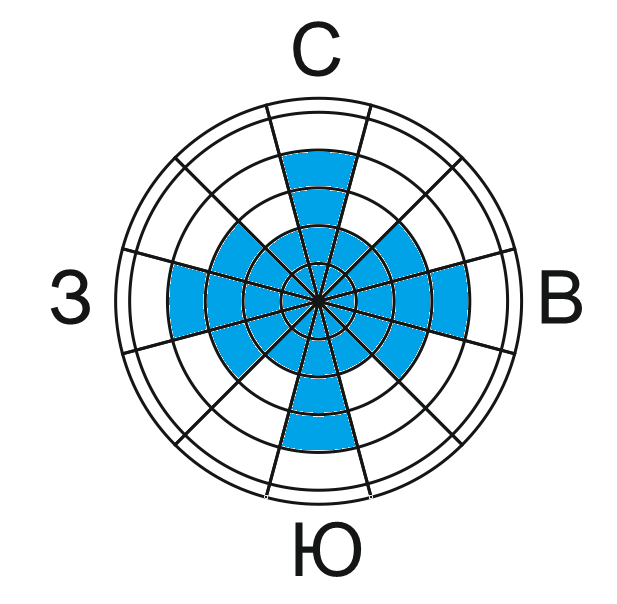

4 «Геометрия» города
4.1 Теоретическая часть
Планировочная структура любого населённого пункта (в особенности гóрода) является ключевым фактором территориальных различий социально-кономических явлений. Если функциональные зоны отражают локализацию основных видов деятельности в городе, то его «геометрия», или планировочная структура, тановится каркасом, определяющим их взаимное расположение, характер и интенсивность связей.
Обозначим основные термины, которые используются исследователями для характеристики основных элементов городской планировки:1
Квартал – первичная планировочная единица застройки в границах красных линий, ограниченная улично-дорожной сетью;
Микрорайон – планировочная единица застройки более крупного масштаба, где городские функции не обязательно концентрируются вдоль улиц, а размещены в пределах кварталов застройки;
Красная линия – граница, которая отделяет квартал, микрорайон или другую единицу планировочной структуры от улично-дорожной сети и других территорий общего пользования (например, зелёных зон);
Планировочный каркас – ведущие элементы застройки поселения, включает в себя элементы как природного, так и антропогенного характера, его элементами являются улично-дорожная сеть, железные дороги (планировочные оси), озеленённые территории, водотоки и водоёмы (экологический каркас);
Улично-дорожная сеть – сеть дорог общего пользования, предназначенных для передвижения людей и транспорта (улицы, проезды, площади, набережные, а также стоянки).

Рисунок 4.1. Схема планировки микрорайона г. Новосибирска[^geometry-2] [^geometry-2]: URL:http://dsa.novo-sibirsk.ru/ru/site/1963.html (дата обращения 24.10.2018 г.)Улицы в городе можно условно разделить в зависимости от роли в планировочной структуре на 3 типа:
Магистральные (соединяют основные планировочные районы, обычно имеют более 2-3 полос движения в каждую сторону);
Основные (большинство городских улиц, связывающих магистрали с кварталами и микрорайонами, 1-2 полосы движения в каждую сторону);
Внутриквартальные и дворовые (проезды внутри застройки, полосы движения обычно не выделяются);
Городской узел – общественное пространство (зона), формирующаяся вблизи пересечений магистральных улиц общегородского значения и характеризующаяся высокой концентрацией экономической и социальной активности.
Существует множество факторов, которые определяют конфигурацию городских территорий и проявляются на разных масштабах (городская агломерация, населённый пункт, район, микрорайон, квартал). Выделяют природно-географические и социально-экономические факторы формирования планировочной структуры городов.
Таблица 4.1. Факторы формирования планировочной структуры города
| Природно-географические факторы |
|---|
| Барьерные |
| Строительные и инженерные |
| Экологические |
| Социально-экономические факторы |
| Экономико-географические |
| Экономические |
| Исторические |
| Социальные |
| Транспортные |
| Институциональные |
| Функциональные |
Сочетание данных факторов, как правило, определяет общий тип планировочной структуры города. В компактных городах вся застройка расположена в едином периметре. Рассредоточенный тип планировки присущ городам, где из-за рельефа местности или расположения градообразующих предприятий сформировались изолированные очаги застройки. Также выделяются линейные города, которые обязаны своей формой физико-географическим объектам (морские побережья, долины рек).

Рисунок 4.2. Типы планировочной структуры городов. А – Компактный, Б – Рассредоточенный, В – Линейный
Внутренняя планировочная структура большинства городов может быть отнесена к одному из нескольких типов. В то же время ни один город не может быть идеальным примером какого-либо типа планировочной структуры. Как правило, наблюдаются комбинации нескольких основных типов планировки:

Рисунок 4.3. Типы планировки городов. А - радиальная, Б – радиально-кольцевая, В – лучевая (веерная), Г – регулярная («шахматная»), Д – свободная (произвольная, иррегулярная)Радиальная и радиально-кольцевая (А и Б) планировка характерна для крупных городов, транспортных узлов, где застройка велась преимущественно вдоль основных путей, связывающих центр поселения с соседними городами. К такому типу относятся многие столичные города (Москва, Париж, Лондон, Мадрид), которые исторически были связаны с другими крупнейшими центрами страны. Зачастую она складывалась в городах, окружённых крепостными стенами, валами, которые по мере роста поселений и утраты оборонительных функций были срыты и использованы в качестве коридоров для строительства кольцевых улиц (например, Бульварного и Садового колец в Москве).
Веерный (В) тип наблюдается в городах, расположенных у водоёмов или крутых уступов рельефа, выступавших в роли барьера для развития города с одной из сторон света (например, Волга в Костроме или Ока в Калуге). Зачастую лучи, расходящиеся из центра, также имели функцию направлений в окружающие города: так, «лучи» Твери до сих пор носят названия в честь тех городов, куда вели эти дороги (Новоторжская улица в сторону Торжка, улица Вольного Новгорода к речному пути по Волге).
Прямоугольная регулярная (Г) планировка является наиболее распространённым типом рисунка улично-дорожной сети городов. Подобная сетка формировалась при проектировании городов, что позволяет обеспечить простоту ориентирования и достаточную степень связности территории. В России первым городом с регулярной планировкой был Санкт-Петербург, которому изначально придавался столичный облик с широкими магистралями и набережными. В период правления Екатерины II многие губернские города также были перестроены или создавались с учетом регулярной прямоугольной планировки (например, Петрозаводск, Краснодар). Такой тип планировки характерен для городов пионерного освоения XIX-XX в., когда в условиях отсутствия ограничений для размещения городов, им задавался самый простой геометрический каркас. Именно прямоугольная планировка свойственна большинству городов Северной Америки и Австралии.
Свободная (Д) планировка характерна для старых районов городов (например, средневековых кварталов европейских городов), застраивавшихся без чёткого плана. В современных городах она встречается в основном в развивающихся странах в районах нелегальной застройки (трущобы, фавелы). Подобные кварталы являются признаком процесса «ложной урбанизации», когда переселение людей в города не сопровождается изменением их образа жизни и вида деятельности. Кроме того, условно «свободной» может быть названа планировка городов, имеющих серьезные физико-географические ограничения развития уличной сети (например, рельеф местности во Владивостоке).
За тысячелетнюю историю существования городов происходили значительные изменения в экономическом и социальном укладе их жителей по всему миру, что не могло не отразиться на развитии градостроительных идей. Города Древнего мира представляли собой стихийно сложившиеся поселения со свободной планировкой, где границы участков определялись каждым землевладельцем самостоятельно. Наиболее влиятельные представители знати и духовенства впервые применили регулярную планировку для дворцовых и храмовых ансамблей. В эпоху Римской империи рост численности населения городов стал фактором, определившим необходимость законодательного регулирования планировки городов. Планирование было распространено на гражданскую практику – в городах появляются форумы2, прокладываются магистральные улицы, строятся мосты и акведуки, закладываются основы регулярной планировки.
В Средние века города часто представляли собой укреплённые поселения, окружённые стенами. Радиально-кольцевой тип планировки в некоторых городах был целесообразен для обороны поселения и экономии при строительстве. Именно в этот период сложилась планировка исторических центров большинства европейских городов, происходил возврат к преобладанию свободной планировки.
Общий культурный подъем эпохи Возрождения и переход от натурального хозяйства к производственному обратил внимание на проблемы градостроительства. Возникли первые проекты «идеальных городов» (Сфорцинда, Пальманова), снова наблюдается преобладание регулярной планировки. Активно строятся общественные здания, площади, возникают градостроительные ансамбли (цельно спланированные очаги застройки).
Скачкообразная урбанизация XIX-XX вв. вместе с технологическим развитием промышленности и транспорта привела к коренной трансформации градостроительных идей. Активное расширение городов, как за счет селитебной застройки, так и промышленных зон привело к распространению централизованного проектирования. Резкое увеличение уровня автомобилизации и социальные эксперименты в XX в. привели к укрупнению планировочной структуры городов: микрорайоны, окружённые скоростными шоссе, пришли на смену классической квартальной застройке.
Тем не менее, во многих городах до сих пор можно встретить следы застройки малых населенных пунктов, которые были поглощены при росте городов. Такими являются, например, города Тушино, Кунцево, Люблино и Перово, которые став крупными жилыми районами современной Москвы, сохраняют элементы старой улично-квартальной сети и застройку.
Для определения типа планировочной сети можно использовать карты города или его отдельных районов. Представленные «гистограммы-компасы» для улиц некоторых крупных российских городов могут эффектно визуализировать пространственную ориентацию, а также преобладающий тип их планировки.

Рисунок 4.4. Как ориентированы улицы в российских городах? Источник: С. Сулейманов, А. Григорьева, J. Boeing, составлено3 на основе картографических данных OpenStreetMap.Города с преимущественно прямоугольной сеткой застройки имеют на диаграмме вид «креста» (большая часть улиц ориентирована по основным сторонам света – в направлении север-юг и перпендикулярном к нему запад-восток: Краснодар, Киров, Калининград). Те поселения, которые расположены вдоль побережья морей и крупных рек, характеризуются гистограммами с максимумами, совпадающими с простиранием упомянутых физико-географических объектов (Махачкала, Волгоград). Крупные транспортные узлы, города рассредоточенного типа или поселения, включающие в себя значительные ареалы свободной застройки, имеют равномерное распределение улиц по их ориентированности (Санкт-Петербург, Владивосток).
4.2 Практическая часть
Методические рекомендации для формулировки и выполнения задания:
Анализ планировочной структуры городской территории не требует выполнения полевого этапа работ. Занятие является камеральным по причине того, что наиболее показательно рассмотрение города в комплексе, а с учётом временны́х рамок практикума, выполнение школьниками подобного объёма работ не представляется возможным. Тем не менее, на наш взгляд подобный вариант является удобным, т.к. позволяет иметь постоянную загрузку школьников без перерывов на случай непредвиденных обстоятельств, например, неблагоприятных погодных условий. Картографические материалы из различных источников в то же время призваны значительно облегчить выполнение занятия.
С учётом различного масштаба городов учителю предлагается на выбор один из следующих полигонов для изучения:
1) вся территория в пределах городской черты для малых и средних городов (до 100 тыс. чел.)
2) отдельные районы крупных и крупнейших городов
При условии участия в занятии более 5 человек работа может проводиться в рамках небольших групп (2-3 человека). При выборе малого или среднего города для анализа его планировочной структуры, другим группам должны быть предложены аналоги (малые и средние города, расположенные в том же регионе). В случае выбора в качестве полигона отдельных районов крупных городов, учитель отбирает разные в планировочном отношении части городской застройки (например, старый центр, спальные районы) и распределяет их между группами. Затем полученные разными группами школьников данные могут быть сопоставлены (сравнение малых городов либо районов крупного города).
Время выполнения задания – 4 академических часа, включая 1 час на выступления школьников с результатами творческих проектов. При работе над заданием учащиеся могут использовать данные, полученные в ходе прошлых занятий (карты плотности населения, «географическая летопись» поселения).
Этапы выполнения задания:
- Подготовительный
Перед непосредственным анализом планировочной структуры необходимо подготовить картографический материал, где будет отражена вся планировочная сеть (улично-дорожная сеть и застройка) исследуемого участка.
В качестве источников рекомендуется использовать регулярно обновляемые электронные карты (OpenStreetMap, Яндекс.Карты, 2ГИС и Google Maps). Необходимо ознакомить школьников с существующими разработками, посвященными анализу пространственной структуры населенных пунктов, заложенные в генеральные планы населенных пунктов и муниципальных районов. Подобные материалы имеются в настоящее время у подавляющего большинства муниципальных образований России и обычно могут быть найдены в свободном доступе на их официальных сайтах4. Распечатка карт предполагает использование формата A4, однако в случае крайне густой планировочной сети возможно использование более крупномасштабных карт на листах A3.
- Работа с картой
Для каждой группы школьников преподаватель выбирает полигон для исследования планировочной структуры. Учащиеся должны маркировать на черновой карте основные планировочные оси (магистральные улицы) и городские узлы (места пересечения магистралей с высокой концентрацией общественных функций). Затем школьники выделяют районы (для крупных городов), отличающиеся особенностями планировки.
Далее учащиеся дают общую характеристику застройки исследуемого города или района, выбирая один из следующих типов:
Компактный
Рассредоточенный
Линейный
В рамках каждого планировочного района даётся характеристика рисунка улично-дорожной сети (типа планировки) в соответствии со следующими обобщёнными типами:
Радиальный (радиально-кольцевой)
Веерный
Регулярный
Свободный
На следующем этапе учащиеся выявляют влияние факторов на планировку полигона. Для удобства примеры особенностей планировочной структуры могут быть занесены в таблицу:
Таблица 4.2. Факторы планировочной структуры города
|:—:|:———–:|:——:| | 1 | … | … | | 2 | … | … |
Более детальный анализ планировочной структуры, её ориентации в пространстве предполагает построение «звёздчатых» гистограмм, (рис.XXX). Для удобства выполнения задания школьникам предлагается заполнить таблицу для каждой из основных улиц, представленных на полигоне. Предполагается, что общее количество главных улиц не будет превышать 30-40 для полигона. Распределение труда внутри групп школьников и совпадение направления большинства улиц облегчит работу над заданием.
Учащиеся отбирают для каждой улицы условно центральный участок (некоторые улицы могут искривляться), для которого определяется азимут по направлению в обе стороны. Результаты измерений заносятся в таблицу. Для целей исследования достаточно точности измерений до 30°. Для построения гистограммы предполагаются 12 интервалов, где угол отсчитывается по часовой стрелке от направления на север (345 - 15°, 15 - 45° и т. д.)
Таблица 4.3. Анализ планировочной структуры
|:—:|:——–:|:——–:|:——–:| | 1 | … | … | … |
- Выступление
Результатом работы каждой группы школьников должна стать карта, где отражены основные планировочные оси и городские узлы. Учащиеся выступают с докладом, где охарактеризованы типы пространственной организации и рисунка городской планировки, отражены основные факторы, оказавшие влияние на современную «геометрию» города.
В качестве творческого задания школьникам предлагается аналитическим путем выявить недостатки существующей улично-дорожной сети города и предложить основные механизмы решения подобных проблем5. В их качестве могут быть варианты строительства новых транспортных коридоров, развязок, формирования экологического каркаса, новых жилых и промышленных кварталов.
При проявлении заинтересованности в данной теме занятия школьники могут построить создают гистограмму пространственной ориентации улиц исследуемого полигона, которую можно использовать для подкрепления гипотез о планировочной структуре, сделанных во время первичного анализа картографических материалов.
Необходимые материалы: простой карандаш, цветные карандаши, линейка, транспортир.
Пример оформления задания:
Пример карты планировочной структуры города (масштаб приведён в качестве примера оформления легенды)

Таблица 4.4. Пример таблицы «Факторы планировочной структуры города»
| № | Особенность планировки | Фактор |
|---|---|---|
| 1 | Радиально-кольцевая застройка Красного Города-Сада | Рельеф (расположение на возвышенности) Институты (социальный эксперимент советской власти) |
| 2 | … | … |
Таблица 4.5. Пример таблицы Анализ планировочной структуры
| № | Название улицы | Азимут 1 | Азимут 2 |
|---|---|---|---|
| 1 | Гоголевская | 15-45 | 195-225 |
Пример гистограммы пространственной ориентации улиц (выбор шкалы зависит от общего количества улиц полигона, также возможно использование долей).

СНиП 2.07. 01-89. Градостроительство. Планировка и застройка городских и сельских поселений. Утв. постановлением Госстроя России от 25 августа 1993 г.↩︎
Центральная городская площадь, сформированная несколькими общественными зданиями, где часто проходили обсуждения важных для граждан вопросов, а также велась торговля.↩︎
URL: https://meduza.io/shapito/2018/07/14/issledovatel-iz-ssha-pridumal-udivitelnuyu-vizualizatsiyu-ob-yasnyayuschuyu-ustroystvo-gorodov-a-my-s-ee-pomoschyu-posmotreli-na-rossiyskie (дата обращения 24.10.2018 г.)↩︎
В качестве примера: Генеральный план г. Канска (Красноярский край) на официальном сайте муниципального образования: http://www.kansk-adm.ru/index.php/gradostroitelnaya-deyatelnost/dokumenty-territorialnogo-planirovaniya/generalnyj-plan-goroda↩︎
В профессиональной геоурбанистике и географии транспорта для решения таких зада используется целый ряд математических методов, в первую очередь – анализ графов транспортной сети. Тем не менее, на наш взгляд, принципиально важно, чтобы школьники были способны идентифицировать городские проблемы без дополнительных методов исследований. В этом и заключается основная характерная черта географического кругозора, формирование которого – основная задача практикума.↩︎